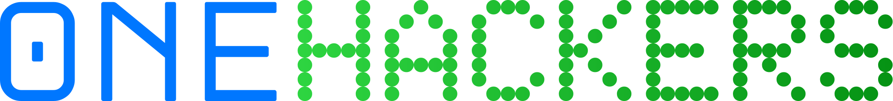

Ask a question out loud in Hindi. It gets transcribed, matched against
ai4bharat/MSMARCO-XI, and answered from what was actually retrieved —
or refused, with the reason shown.
The voice path runs real Sarvam speech-to-text on captured audio. Typed questions
work too, but come back flagged voice_input: false — a typed question
never gets presented as a spoken one.